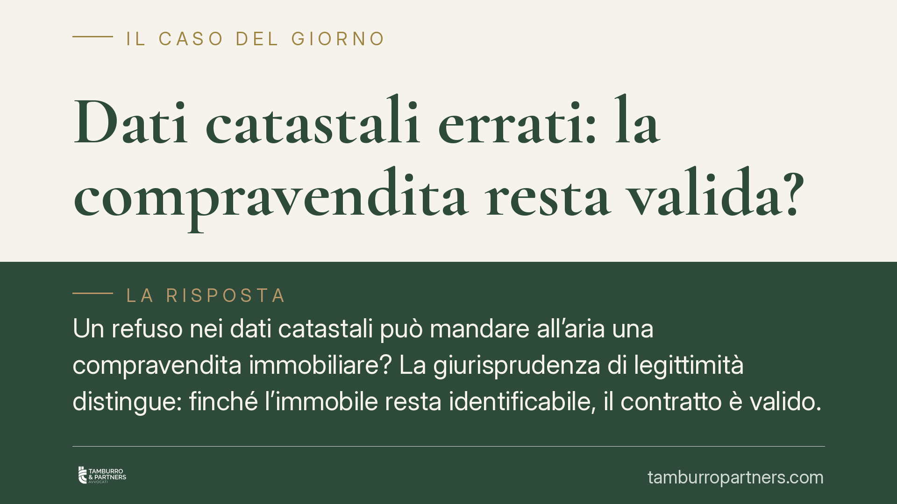

Dati catastali errati: la compravendita resta valida?
Un refuso nei dati catastali può mandare all'aria una compravendita immobiliare? La giurisprudenza di legittimità distingue: finché l'immobile resta identificabile, il contratto è valido. Diverso il caso in cui gli stessi dati vengano usati per vendere due beni distinti. Vediamo quando l'errore è innocuo e quando apre a responsabilità del venditore, anche se l'imprecisione nasce dal notaio.

Il problema: cosa accade se i dati catastali sono sbagliati
Negli atti di compravendita immobiliare i dati catastali (foglio, particella, subalterno) servono a individuare con precisione il bene. Capita però che contengano errori: un numero trascritto male, un subalterno scambiato, una categoria non aggiornata.
La domanda che si pongono acquirenti e venditori è semplice: un errore di questo tipo rende nullo o annullabile il contratto? La risposta della giurisprudenza di legittimità è articolata e ruota attorno a un concetto chiave, l'identificabilità del bene.
Inquadramento normativo
Il dato catastale ha, di regola, una funzione descrittiva e fiscale: serve a rappresentare l'immobile e a collegarlo al sistema tributario e tavolare. Non ha, invece, funzione costitutiva: non è il dato catastale a creare o trasferire il diritto di proprietà.
Questa distinzione è decisiva. L'art. 1350 del Codice civile impone la forma scritta per i contratti che trasferiscono la proprietà di beni immobili, ma non richiede che l'oggetto sia individuato esclusivamente tramite gli identificativi catastali. Se il bene è riconoscibile attraverso altri elementi (confini, indirizzo, descrizione, planimetrie allegate), il contratto conserva validità anche a fronte di un errore catastale.
Quando invece l'errore incide sull'effettivo acquisto della proprietà, si entra nel terreno dell'inadempimento. L'art. 1476, n. 2, del Codice civile pone a carico del venditore l'obbligo di far acquistare al compratore la proprietà del bene; l'art. 1218 regola in via generale la responsabilità del debitore che non esegue correttamente la propria prestazione. Se poi l'imprecisione è attribuibile al professionista rogante, viene in rilievo la responsabilità del notaio secondo i criteri dell'art. 2236 del Codice civile, relativo alla diligenza richiesta nelle prestazioni di particolare difficoltà tecnica.
Il caso critico: stessi dati per due immobili diversi
Situazione diversa e più grave è quella in cui i medesimi identificativi catastali vengano impiegati in due contratti distinti, finendo per "sovrapporre" due beni. Qui non si tratta di un mero refuso: l'acquirente rischia di non ottenere ciò che ha effettivamente comprato.
In questi casi il venditore può rispondere verso l'acquirente per inadempimento, anche quando l'errore materiale sia stato commesso dal notaio in sede di redazione dell'atto. Il venditore resta infatti il soggetto obbligato a garantire il risultato traslativo; potrà poi eventualmente agire in rivalsa nei confronti del professionista per il danno subito.
È bene tenere distinta questa ipotesi dalla garanzia per evizione, che opera quando l'acquirente perde il bene per effetto del diritto di un terzo. La responsabilità per inadempimento presuppone invece che il difetto incida concretamente sull'acquisto della proprietà promessa.
Implicazioni pratiche
Per l'acquirente, un errore catastale non è di per sé motivo di panico: se il bene è chiaramente individuabile, l'atto tiene. Ma la soglia tra "refuso irrilevante" e "difetto sostanziale" non è sempre netta, e la qualificazione dell'errore incide su rimedi disponibili e termini applicabili.
Per il venditore, affidarsi integralmente al notaio non elimina l'esposizione: l'errore del professionista non lo libera automaticamente verso l'acquirente.
Cosa fare in concreto
- Verificate la coerenza dei dati tra atto, visura catastale, planimetria e titoli di provenienza prima della firma.
- Identificate l'immobile con più elementi: oltre ai dati catastali, inserite confini, indirizzo e descrizione puntuale nell'atto.
- Segnalate subito eventuali sovrapposizioni o duplicazioni di identificativi rispetto ad altri immobili o atti.
- Documentate per iscritto ogni rilievo mosso al notaio o alla controparte, conservandone traccia.
- Ricordate che la qualificazione dell'errore (semplice refuso o difetto sostanziale) determina quali rimedi e termini risultano applicabili.
---
Contributo informativo a cura di Tamburro & Partners Avvocati. Non costituisce parere legale.
Ogni contratto ha il suo equilibrio.
Se vuoi una revisione delle clausole o una redazione su misura, scrivi allo studio. Ti rispondiamo entro un giorno lavorativo.